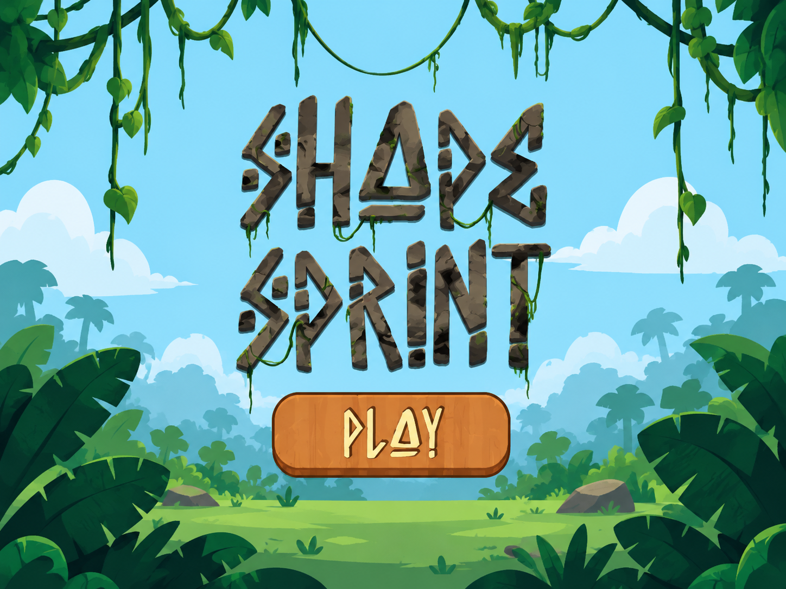

01Shape Sprint ↗
Shift your shape. Find your rhythm. A six-level arcade runner with cube-to-sphere transformations, three-lane movement, and coins worth chasing.
MY ROLE Gameplay programming · Input · Camera · Health & progression
UI artwork created by a collaborating artist.